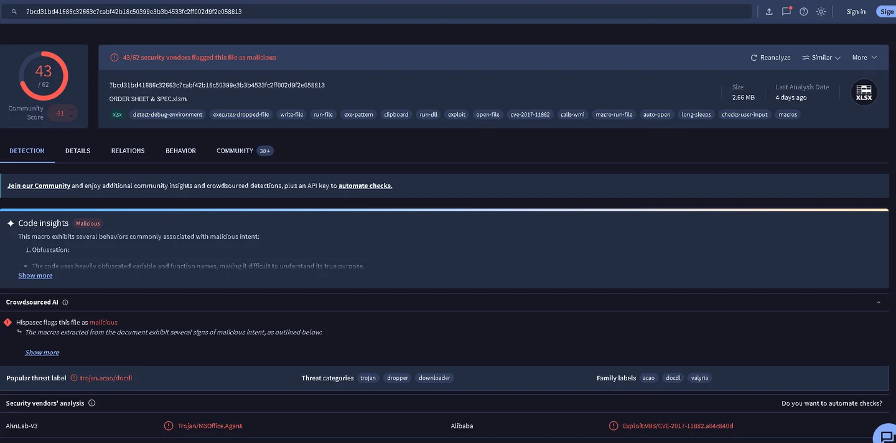
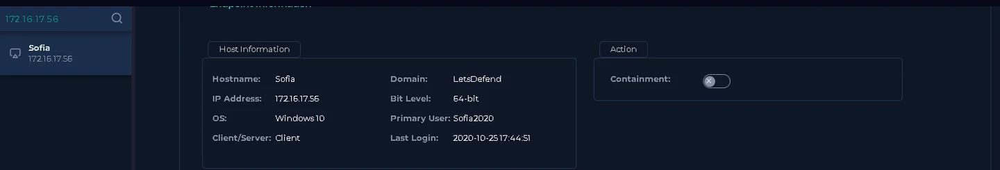
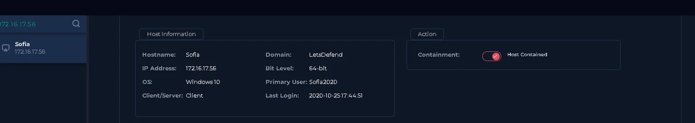
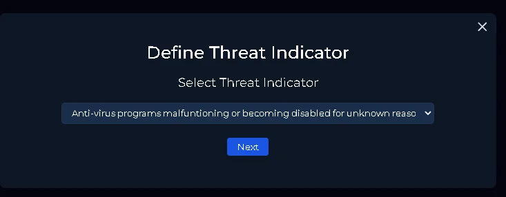
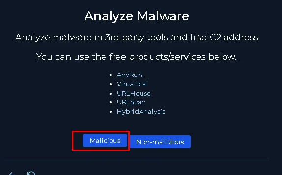
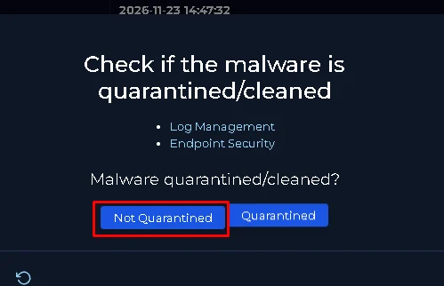
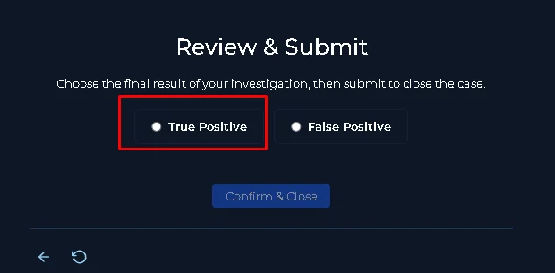

SOC138 · Detected Suspicious XLS File
- Categoria
- Malware
- Caso
- SOC138
- Registro
- Host isolado
Resumo
Investigação de um alerta de planilha suspeita, com foco no comportamento do endpoint.
Passo a passo da investigação
Dados do alerta
- ID do evento: 77
- Data e hora do evento: 13/03/2021, às 20h20
- Regra: SOC138 — Detected Suspicious Xls File
- Tipo de alerta: Malware
- Técnica MITRE informada: T1112 — Defense Evasion: Modify Registry
- Severidade: Média
Análise
1. Verificação do arquivo
O primeiro passo foi analisar no VirusTotal o hash MD5
7ccf88c0bbe3b29bf19d877c4596a8d4. A análise indicou que o
arquivo era malicioso.

2. Identificação do equipamento
O endereço IP 172[.]16[.]17[.]56 foi consultado no
Endpoint, que identificou o computador da Sofia.

3. Análise do processo e dos logs
Foi identificado um processo suspeito do PowerShell em execução. O comando encontrado estava ofuscado e foi decodificado para análise. O endereço IP do equipamento também foi consultado no Log Management para análise dos registros.
Após a decodificação do comando e a análise dos logs, identificamos
que o script tentava baixar um arquivo malicioso a partir do endereço
[URL omitida]. O endereço foi verificado no VirusTotal e
classificado como malicioso. Os endereços IP
177[.]53[.]143[.]89 e 35[.]189[.]10[.]17 foram
consultados no AbuseIPDB e apresentaram pontuação de risco zero. Apesar
disso, considerando os demais indicadores, a máquina foi isolada para
investigação.

Relatório



Resumo
A análise identificou o hash MD5
7ccf88c0bbe3b29bf19d877c4596a8d4, associado a um arquivo
malicioso e verificado no VirusTotal. Os logs do proxy indicaram que o
host da Sofia (172[.]16[.]17[.]56) acessou o endereço
malicioso [URL omitida] em 19/10/2020, às 16h17min38s.
Também foi identificado um comando PowerShell ofuscado que tentava
baixar um executável de várias URLs. A técnica MITRE informada no alerta
é T1112 (Modify Registry), associada à tática Defense Evasion. A máquina
foi colocada em quarentena para investigação adicional.

Exercício simulado. Algumas capturas foram recortadas ou tiveram campos ocultados.